Resultados
279 carreras con clasificación, desde 2012. Escribí tu nombre y te mostramos todas las tuyas.


Mar de Cobo Corre, 6ta. Edición
11 de octubre de 2026 · Mar de Cobo · 187 en la clasificación
Primero en la general: Bissio Leon, 0:47:22
4° MTB Series Sierra de los Difuntos
4 de octubre de 2026 · Mar del Plata · 138 en la clasificación
Primero en la general: Galarza Facundo, 1:49:30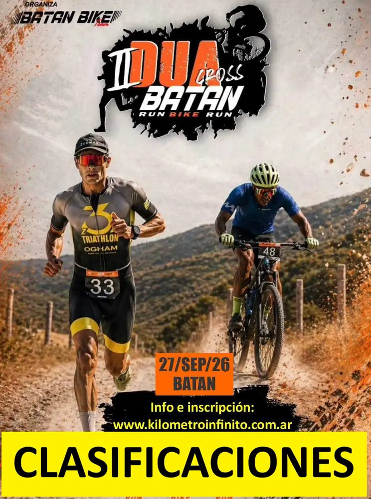
2° Dúa Cross Batán
27 de septiembre de 2026 · Batán · 80 en la clasificación
Primero en la general: Videla Sergio, 1:30:04
4° Rally Mar y Sierras
13 de septiembre de 2026 · Mar del Plata · 141 en la clasificación
Primero en la general: Martinez Ariel, 2:04:04
8° Desafío de los Leones
6 de septiembre de 2026 · Balcarce · 82 en la clasificación
Primero en la general: Fioritti Pablo / Donofrio Hernan, 1:43:50
6° Duatlón Rural Laguna Mar Chiquita
30 de agosto de 2026 · Mar Chiquita · 62 en la clasificación
Primero en la general: Videla Sergio, 1:07:032a. Vuelta a Azucena
23 de agosto de 2026 · Azucena · 154 en la clasificación
Primero en la general: Cansina Francisco, 1:33:50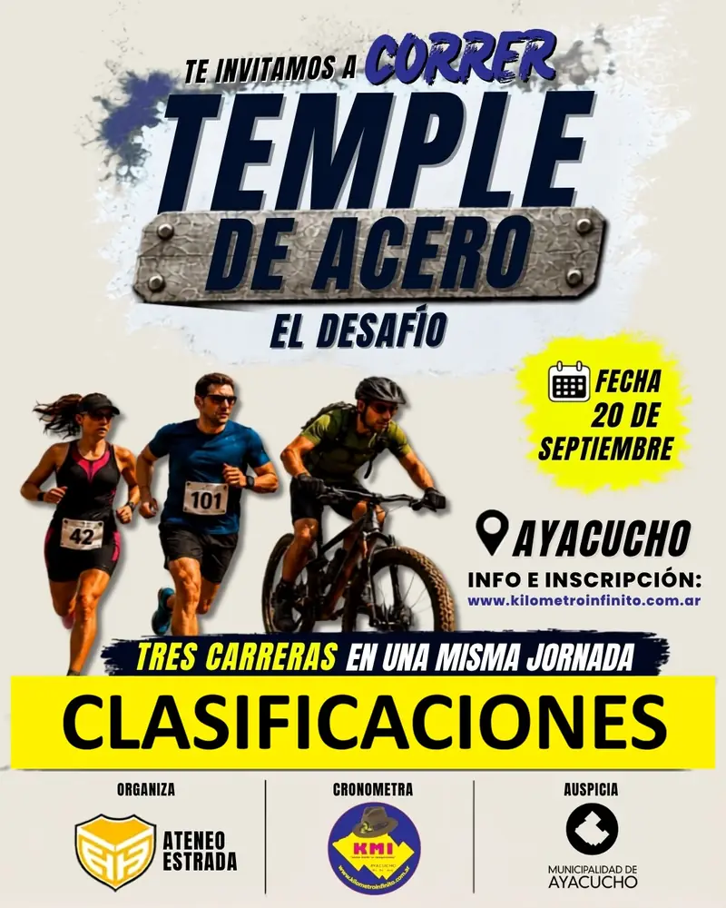
Desafío Temple de Acero Duatlón
9 de agosto de 2026 · Ayacucho · 112 en la clasificación
Primero en la general: Erviti Matias, 2:09:28
3° Rally Solidario Mar de las Pampas
2 de agosto de 2026 · Mar de las Pampas · 156 en la clasificación
Primero en la general: Vercesi Luciano, 1:59:56
Rally Endurance las 3hs de MTB en Balcarce
12 de julio de 2026 · Balcarce · 241 en la clasificación
Primero en la general: Borghese Thomas, 3:29:16
Gran Premio 160º Aniversario de Ayacucho
14 de junio de 2026 · Ayacucho · 45 en la clasificación
Primero en la general: Trabella Dario / Aguirre Jonatan, 1:25:34
5º Rally Cross Miramar
7 de junio de 2026 · Miramar · 226 en la clasificación
Primero en la general: Sosa Juan Cruz, 1:39:58
10ª Vuelta a Gardey
31 de mayo de 2026 · Gardey · 165 en la clasificación
Primero en la general: Nieto Agustin / Trabella Dario, 1:24:03
1º Duatlón Rural Vivoratá
17 de mayo de 2026 · Vivoratá · 82 en la clasificación
Primero en la general: Pereyra Nicanor, 1:12:47
Hangar Race
3 de mayo de 2026 · Rauch · 108 en la clasificación
Primero en la general: Peñalva Rodrigo, 0:40:08
KMI MTB Timing
19 de abril de 2026 · Ayacucho · 169 en la clasificación
Primero en la general: Dipierro Jonatan, 1:41:44
20° Vuelta a la Escuela Granja
15 de marzo de 2026 · Tandil · 156 en la clasificación
Primero en la general: Nieto Agustin, 1:52:47
8ª Vuelta de MTB Rural a Batán
1 de marzo de 2026 · Batán · 401 en la clasificación
Primero en la general: Aiello Maximiliano, 2:17:07

La Noel Bike
21 de diciembre de 2025 · Tandil · 111 en la clasificación
Primero en la general: Trabella Dario, 1:37:39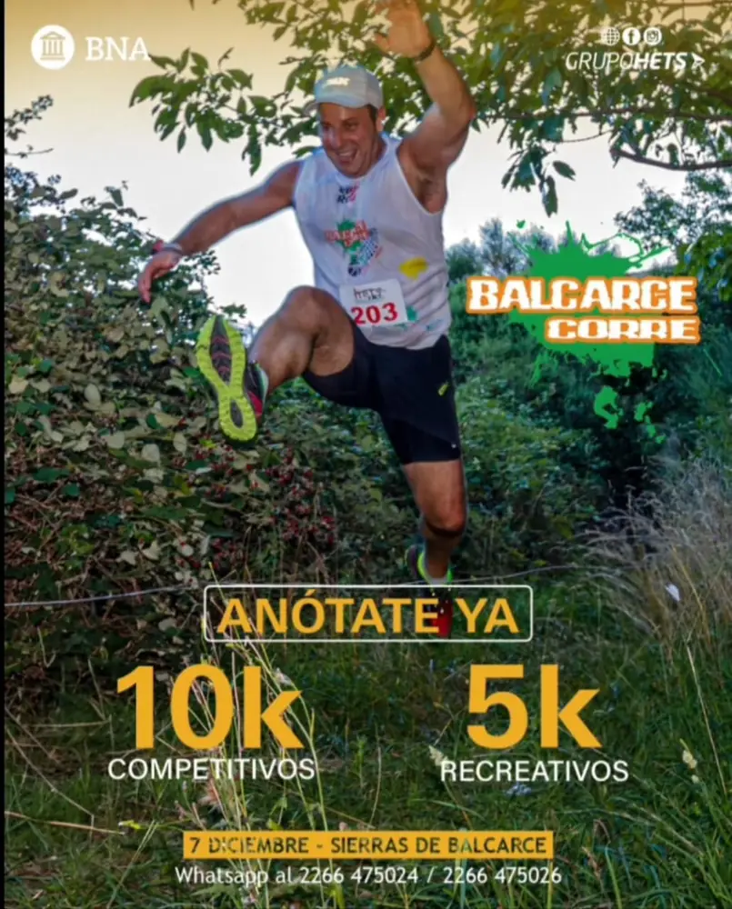
Balcarce Corre
7 de diciembre de 2025 · Balcarce · 345 en la clasificación
Primero en la general: Villarroel Sergio, 0:37:11
5° Rural Bike del A.c.e.p.t. N° 20
30 de noviembre de 2025 · Mechongué · 131 en la clasificación
Primero en la general: Ramos Sergio, 1:29:22
1º Duatlón Cross Batán
23 de noviembre de 2025 · Batán · 147 en la clasificación
Primero en la general: Videla Sergio, 1:23:496° Desafío Costa Brava
16 de noviembre de 2025 · Quequén · 56 en la clasificación
Primero en la general: Aristain Cristian, 1:46:21
Gran Premio 85º Aniversario del Ayacucho Cicles Club
9 de noviembre de 2025 · Ayacucho · 46 en la clasificación
Primero en la general: Brunini Ramiro, 1:13:37
MTB Series MDQ Sierra de los Difuntos
5 de octubre de 2025 · Mar del Plata · 215 en la clasificación
Primero en la general: Caraccioli Luciano, 2:10:45
9ª Vuelta a Coronel Vidal
28 de septiembre de 2025 · Coronel Vidal · 76 en la clasificación
Primero en la general: Franco Bautista, 1:30:55
7mo. Desafío de los Leones
31 de agosto de 2025 · Balcarce · 120 en la clasificación
Primero en la general: Donofrio Hernan / Gonzalez R. Juan Cruz, 1:51:35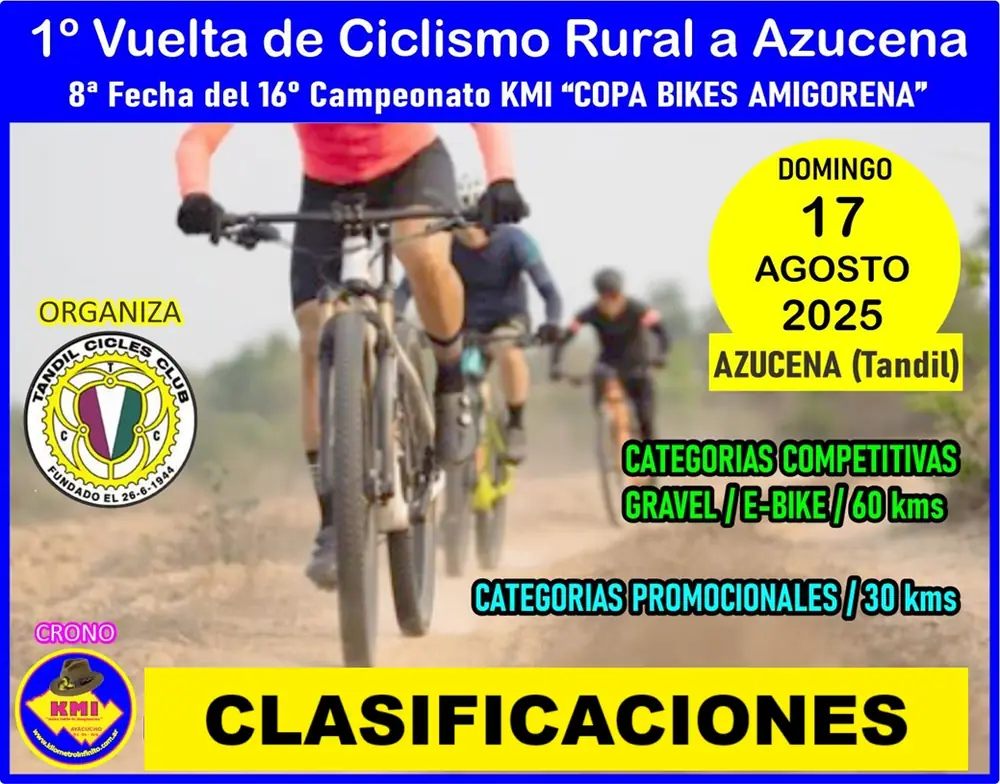
1º Vuelta de Ciclismo Rural a Azucena
17 de agosto de 2025 · Azucena · 140 en la clasificación
Primero en la general: Chiacchio Martin, 1:35:52
14º Desafío de las Tres Cruces
10 de agosto de 2025 · Ayacucho · 95 en la clasificación
Primero en la general: Gonzalez R. Juan Cruz, 1:30:16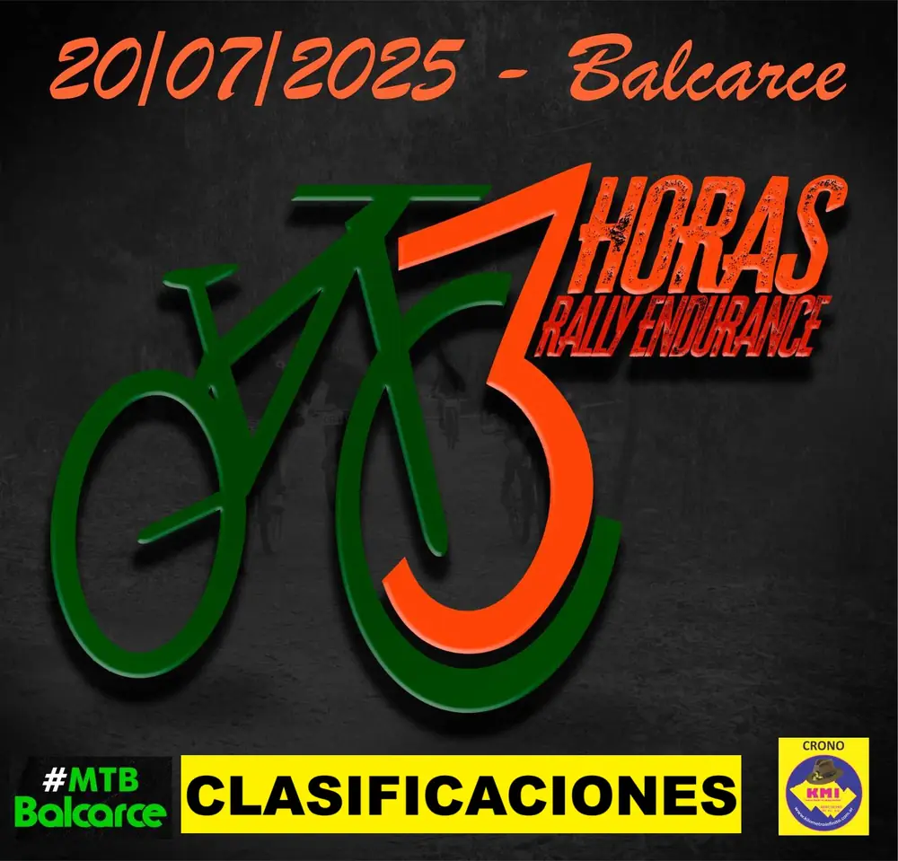
Rally Endurance 3 Horas de MTB en Balcarce
20 de julio de 2025 · Balcarce · 308 en la clasificación
Primero en la general: Aiello Maximiliano, 3:17:402do. Rally Bike Solidario del Rotary Club Villa Gesell Playa
13 de julio de 2025 · Mar de las Pampas · 131 en la clasificación
Primero en la general: Vercesi Luciano, 2:00:44
4to. Rally Cross Miramar
8 de junio de 2025 · Miramar · 306 en la clasificación
Primero en la general: Trotta Gonzalo, 1:33:01
4to. Duatlón Rural Laguna Mar Chiquita
1 de junio de 2025 · Mar Chiquita · 124 en la clasificación
Primero en la general: Cuccarese Pablo, 1:10:34
3er. Rally Mar y Sierras
25 de mayo de 2025 · Mar del Plata · 194 en la clasificación
Primero en la general: LLanos Gaston, 1:55:17
9no. Rally Costa del Este
18 de mayo de 2025 · Costa del Este · 290 en la clasificación
Primero en la general: Caraccioli Luciano, 1:32:51
9a. Vuelta a Gardey
11 de mayo de 2025 · Gardey · 110 en la clasificación
Primero en la general: Martinez Esteban / Nieto Agustin, 1:26:36
Desafío de las 7 Lomas
19 de abril de 2025 · Sierra de los Padres · 214 en la clasificación
Primero en la general: Llanos Gaston, 1:31:35:646
La Revancha al Desafío de las Tres Cruces Copa Top Bikes
6 de abril de 2025 · Ayacucho · 167 en la clasificación
Primero en la general: Giuliano Cristian, 1:14:12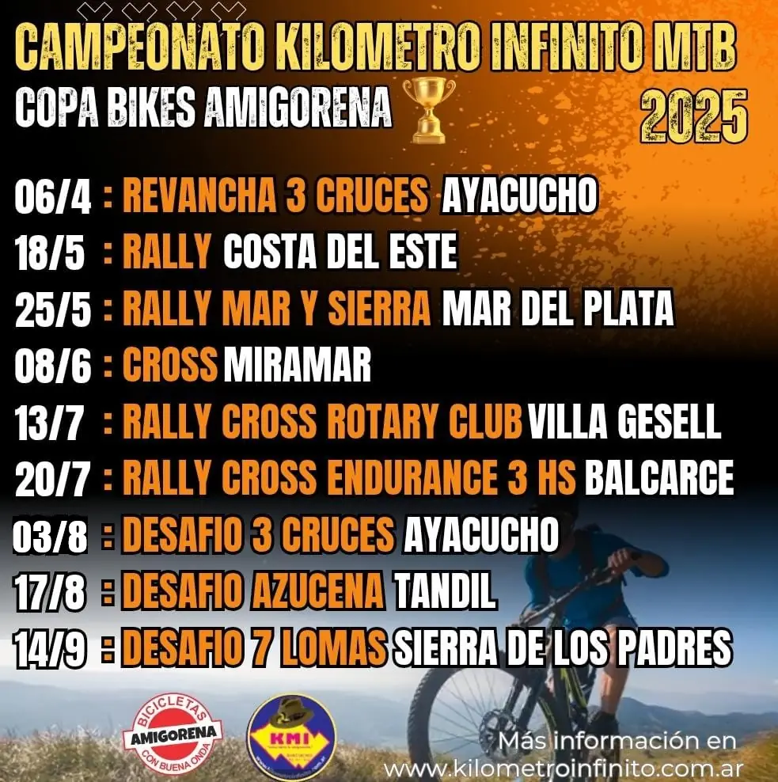
16° Campeonato Regional de MTB Rural KMI Copa Bikes Amigorena
6 de abril de 2025 · 135 en la clasificación
Primero en la general: Gonzalez R. Juan Cruz, 222
7ma. Vuelta de MTB Rural a Batán
23 de marzo de 2025 · Batán · 495 en la clasificación
Primero en la general: Perez Carolina, 2:56:00
19ª Vuelta de Ciclista Rural a la Escuela Granja
2 de marzo de 2025 · Tandil · 180 en la clasificación
Primero en la general: Tolosa Sebastian, 1:48:18

4º Rural Bike Mechongué
15 de diciembre de 2024 · Mechongué · 126 en la clasificación
Primero en la general: Ramos Sergio, 1:35:32
1ª Vuelta a Macedo del Rotary Club Playa en Villa Gesell
8 de diciembre de 2024 · Villa Gesell · 76 en la clasificación
Primero en la general: Ramos Sergio, 1:25:00
5° Rural Bike Sebastián Podazza
24 de noviembre de 2024 · General Lavalle · 99 en la clasificación
Primero en la general: Ramos Sergio, 1:21:23
4° Corriendo por Mar de Cobo
3 de noviembre de 2024 · Mar de Cobo · 306 en la clasificación
Primero en la general: Diz Raul, 0:35:59
3er. Rally Cross Miramar
27 de octubre de 2024 · Miramar · 226 en la clasificación
Primero en la general: Moyano Jonatan, 1:46:57
Campeonato Sudamericano de MTB
11 de octubre de 2024 · Balcarce · 182 en la clasificación
Primero en la general: Duran Agustin, 1:27:31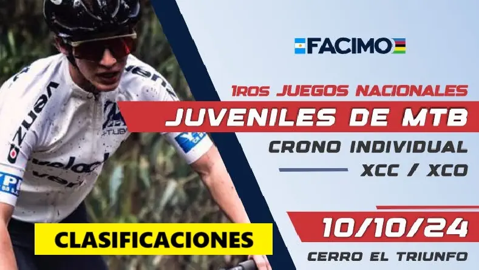
1ros. Juegos Juveniles Nacionales de MTB
10 de octubre de 2024 · Balcarce · 243 en la clasificación
Primero en la general: Rosas Valentina, 0:04:01
2º MTB Series Sierra de los Difuntos
6 de octubre de 2024 · Mar del Plata · 318 en la clasificación
Primero en la general: Aiello Maximiliano, 1:39:06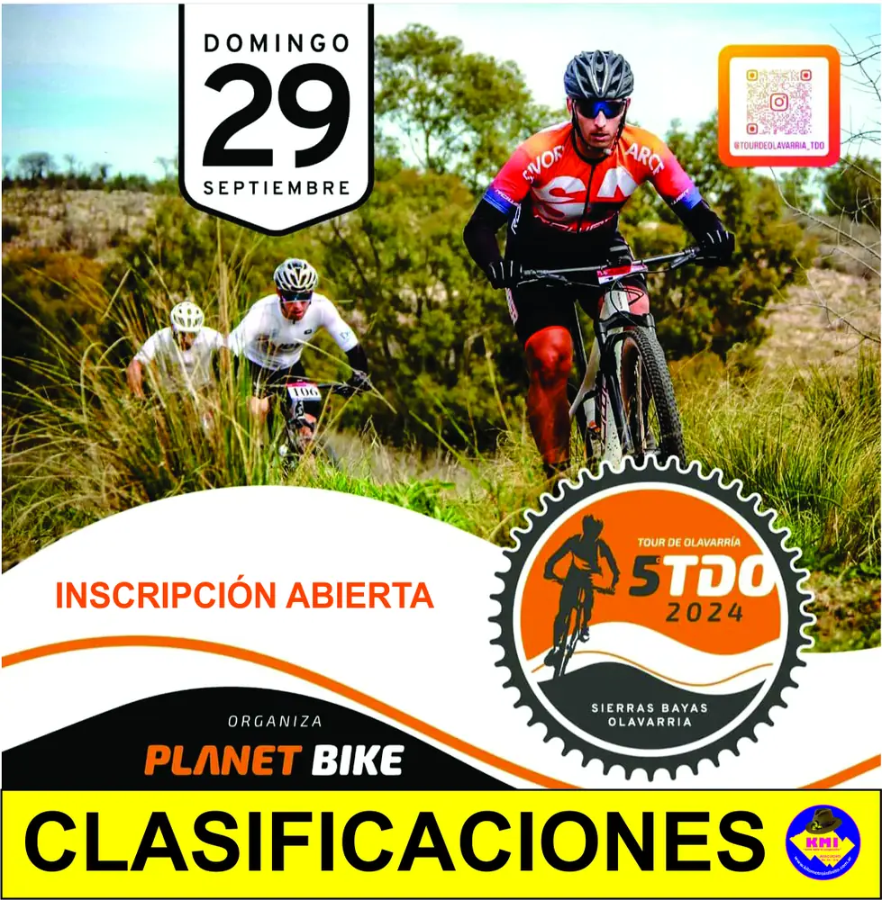
5º Tour de Olavarría
29 de septiembre de 2024 · Olavarría · 417 en la clasificación
Primero en la general: Caraccioli Luciano, 2:05:11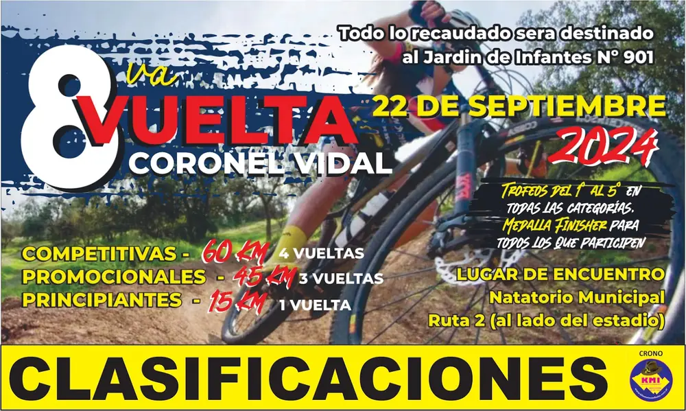
8ª Vuelta a Coronel Vidal
22 de septiembre de 2024 · Coronel Vidal · 110 en la clasificación
Primero en la general: Pereyra Nicanor, 1:18:07
7 Lomas la Revancha
15 de septiembre de 2024 · Sierra de los Padres · 261 en la clasificación
Primero en la general: Martinez Claudio, 2:01:28
Pinamar Bike Race, 3era. Edición
8 de septiembre de 2024 · Pinamar · 71 en la clasificación
Primero en la general: Cansina Francisco / Conforti Emanuel, 1:45:14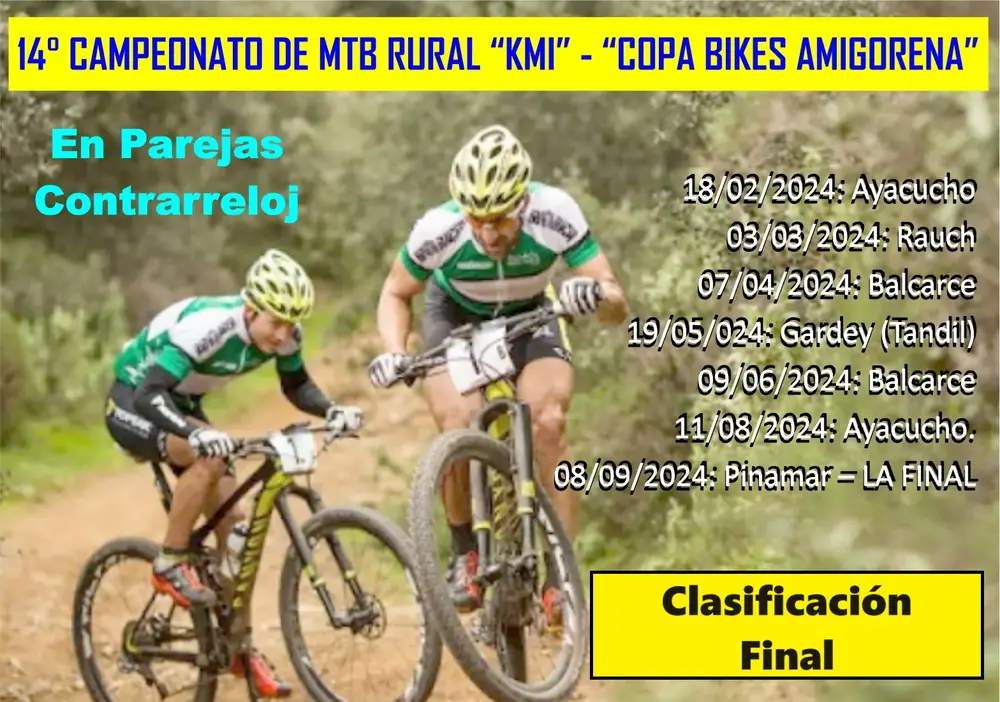
14to. Campeonato KMI Copa Bikes Amigorena
8 de septiembre de 2024 · 28 en la clasificación
Primero en la general: Cansina Francisco / Conforti Emanuel, 248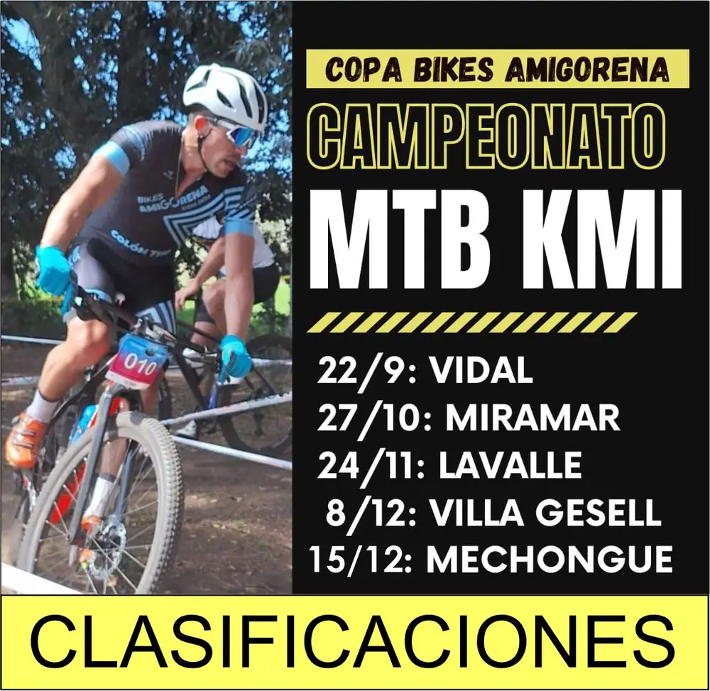
15° Campeonato Regional de MTB Rural KMI Copa Bikes Amigorena del al
25 de agosto de 2024 · 54 en la clasificación
Primero en la general: Perez Nahuel, 203
4° Duatlón Rural Desafío de los Senderos
18 de agosto de 2024 · Necochea · 74 en la clasificación
Primero en la general: Obredor Jonatan, 1:18:48
13er. Desafío de las Tres Cruces
11 de agosto de 2024 · Ayacucho · 298 en la clasificación

6to. Desafío de los Leones
28 de julio de 2024 · Balcarce · 167 en la clasificación
Primero en la general: Cedeira Matias / Fritz Eduardo, 1:36:11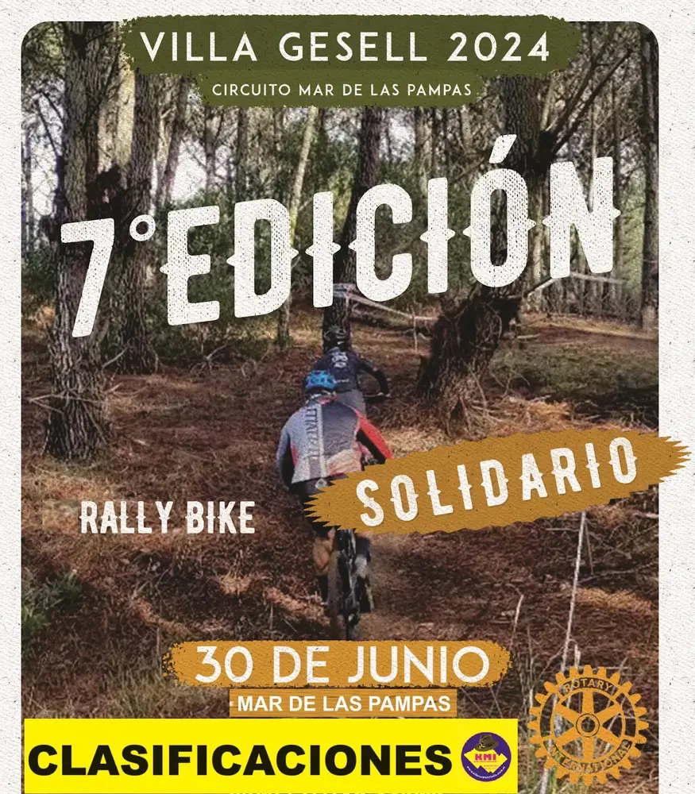
7mo. Rally Bike Solidario del Rotary Club Villa Gesell
30 de junio de 2024 · Mar de las Pampas · 166 en la clasificación
Primero en la general: Vercesi Luciano, 1:39:25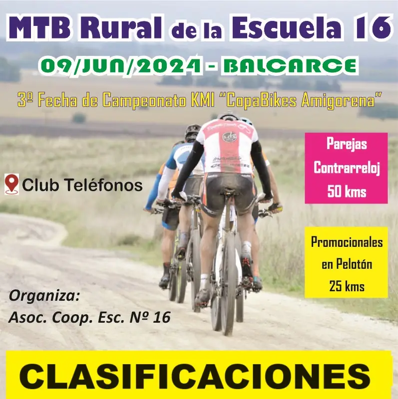
2do. Rural Bike de la Escuela Nro.
9 de junio de 2024 · Balcarce · 101 en la clasificación
Primero en la general: Giuliano Cristian / Gaona Diego, 0:50:14
3er. Duatlón Rural Mar Chiquita
2 de junio de 2024 · Mar Chiquita · 112 en la clasificación
Primero en la general: Cuccarese Pablo, 1:07:25
2do. Rally Mar y Sierras
26 de mayo de 2024 · Sierra de los Padres · 262 en la clasificación
Primero en la general: Dipierro Jonatan, 1:39:13
Fiestas Mayas 2024
25 de mayo de 2024 · General Lavalle · 74 en la clasificación
Primero en la general: Martinez Wenceslao, 0:27:16
8a. Vuelta a Gardey
19 de mayo de 2024 · Gardey · 120 en la clasificación
Primero en la general: Gaona Diego / Aiello Maximiliano, 1:21:43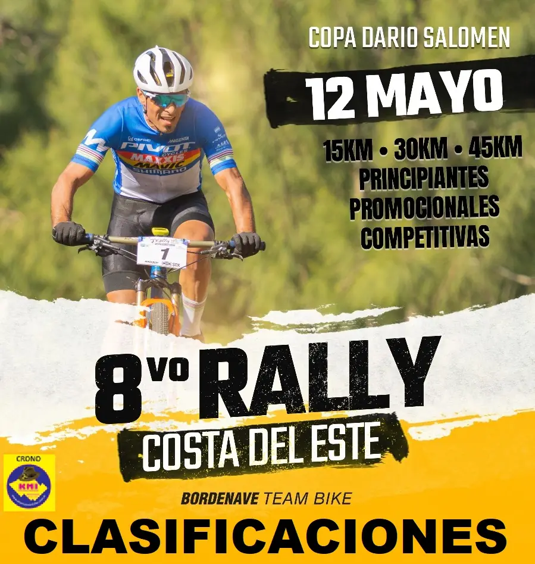
8vo. Rally Costa del Este
12 de mayo de 2024 · Costa del Este · 259 en la clasificación
Primero en la general: Caraccioli Luciano, 1:28:123er. Duatlón Cross Maipú
5 de mayo de 2024 · Maipú · 114 en la clasificación
Primero en la general: Obredor Jonatan, 1:11:39
Dua de Fuego
14 de abril de 2024 · Villa Gesell · 55 en la clasificación
Primero en la general: Gatti Matias, 1:28:23
Rally MTB Rural FDT
7 de abril de 2024 · Ayacucho · 89 en la clasificación
Primero en la general: Cansina Francisco / Conforti Emanuel, 1:35:28
18ª Vuelta a la Escuela Granja
17 de marzo de 2024 · Tandil · 160 en la clasificación
Primero en la general: Martinez Claudio, 1:46:07
6ª Vuelta MTB Rural Batán
10 de marzo de 2024 · Batán · 468 en la clasificación
Primero en la general: Cedeira Matias, 2:21:21
2ª Vuelta al Pago
24 de febrero de 2024 · 658 en la clasificación
Primero en la general: Funaro Guillermo, 0:30:52

13° Campeonato Regional de MTB Rural KMI Copa Bikes Amigorena
26 de noviembre de 2023 · 90 en la clasificación
Primero en la general: Jara Bruno, 193
3º Rural Bike Mechongué
26 de noviembre de 2023 · Mechongué · 204 en la clasificación
Primero en la general: Mari Emanuel, 1:39:12
5º Desafío Costa Brava
20 de noviembre de 2023 · Quequén · 128 en la clasificación
Primero en la general: Giuliano Cristian, 1:42:01
8º Rural Bike del Cicles Club Rauch
12 de noviembre de 2023 · Rauch · 148 en la clasificación
Primero en la general: Giuliano Cristian, 1:31:33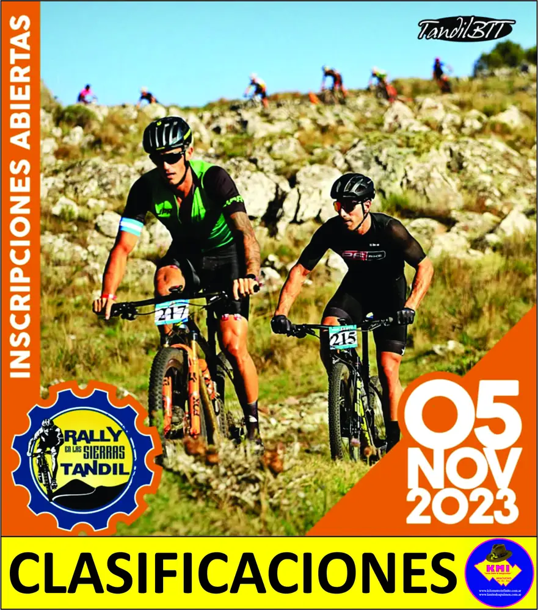
17º Rally en las Sierras de
5 de noviembre de 2023 · Tandil · 858 en la clasificación
Primero en la general: Aiello Maximiliano, 2:05:05
2º Rally Cross Miramar
29 de octubre de 2023 · Miramar · 408 en la clasificación
Primero en la general: Caraccioli Luciano, 1:45:31
MTB Series MDQ Sierra de los Difuntos
8 de octubre de 2023 · Mar del Plata · 178 en la clasificación
Primero en la general: Caraccioli Luciano, 1:45:25
Pinamar Bike Race '
1 de octubre de 2023 · Pinamar · 126 en la clasificación
Primero en la general: Caraccioli Luciano, 1:37:12
4º Tour de Olavarría
24 de septiembre de 2023 · Olavarría · 282 en la clasificación
Primero en la general: Aiello Maximiliano, 2:31:29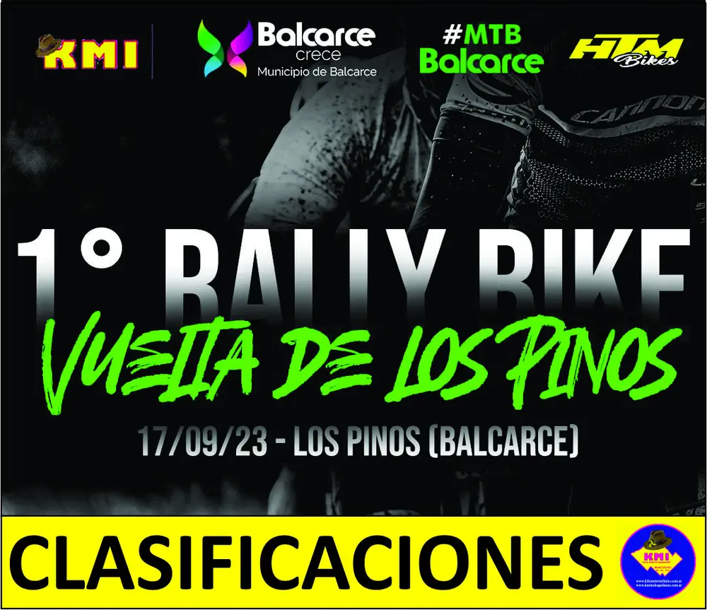
1º Rally Bike Vuelta de los Pinos
17 de septiembre de 2023 · Balcarce · 130 en la clasificación
Primero en la general: Jauregui Jose M., 1:44:32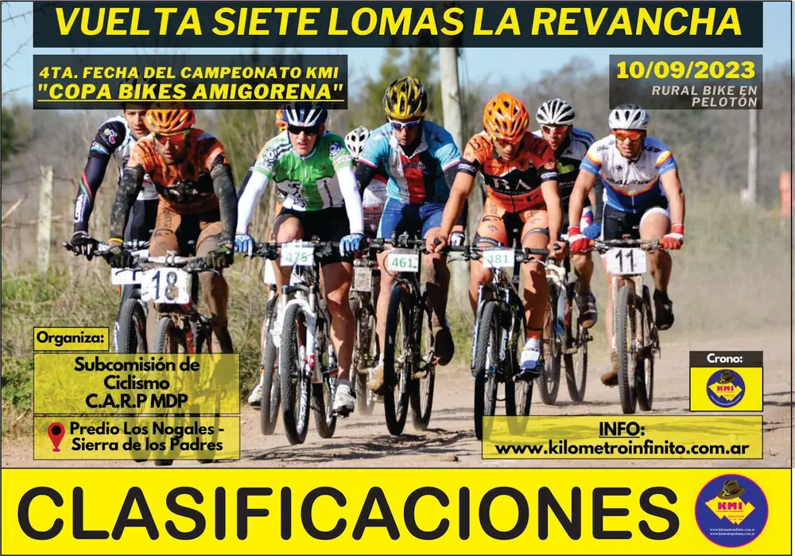
Vuelta de las 7 Lomas la Revancha
10 de septiembre de 2023 · Sierra de los Padres · 237 en la clasificación
Primero en la general: Moyano Jonatan, 1:47:154º Rural Bike Sebastián Podazza
27 de agosto de 2023 · General Lavalle · 123 en la clasificación
Primero en la general: Ibarra Thomas, 1:21:34
12a. Vuelta al Pueblo de Pila
20 de agosto de 2023 · Pila · 88 en la clasificación
Primero en la general: Giuliano Cristian, 1:28:56
12º Desafío de las Tres Cruces
6 de agosto de 2023 · Ayacucho · 251 en la clasificación
Primero en la general: Odriozola L. Matias, 1:33:39
2º Duatlón Rural Ciudad de Maipú
30 de julio de 2023 · Maipú · 159 en la clasificación
Primero en la general: Cepeda Ramiro, 1:10:51
Campeonato Nacional Facimo de Rally Endurance 2023 las 3 Hs de MTB de Balcarce
16 de julio de 2023 · Balcarce · 397 en la clasificación
Primero en la general: Aiello Maximiliano, 3:00:29
2º Duatlón Rural Mar Chiquita
2 de julio de 2023 · Mar Chiquita · 104 en la clasificación
Primero en la general: Videla Sergio, 1:06:14
6º Rally Solidario del Rotary Club Villa Gesell
25 de junio de 2023 · Mar de las Pampas · 180 en la clasificación
Primero en la general: Jauregui Jose M., 1:28:34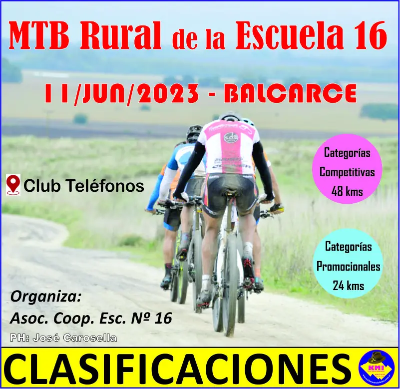
MTB Rural Escuela Nº 16 de Balcarce
11 de junio de 2023 · Balcarce · 159 en la clasificación
Primero en la general: Giuliano Cristian, 1:30:59
2º Duatlón Rural Desafío al Punto Cardinal
4 de junio de 2023 · 88 en la clasificación
Primero en la general: Cepeda Ramiro, 1:34:17
Rally Mar y Sierras Homenaje a Osvaldo Campero
28 de mayo de 2023 · Sierra de los Padres · 299 en la clasificación
Primero en la general: Vazquez Gaston, 1:55:39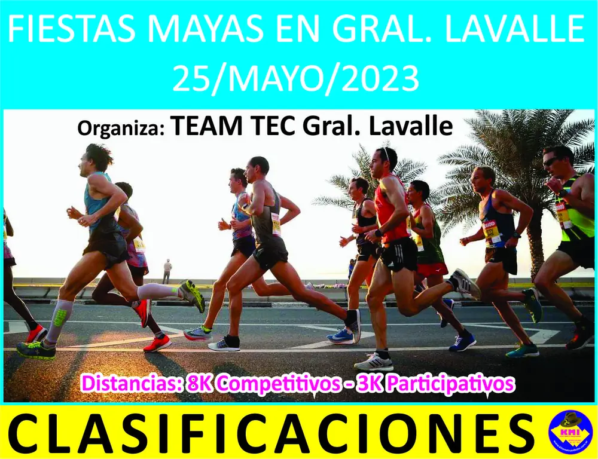
Fiestas Mayas en Gral. Lavalle
25 de mayo de 2023 · General Lavalle · 174 en la clasificación
Primero en la general: Cesar Valentin, 0:26:27
7º Vuelta a Gardey
21 de mayo de 2023 · Gardey · 183 en la clasificación
Primero en la general: Martinez Claudio / Tolosa Sebastian, 1:20:15
7º Rally Costa del Este Copa Dario Salomen
14 de mayo de 2023 · Costa del Este · 268 en la clasificación
Primero en la general: Caraccioli Luciano, 1:32:36
16ª Vuelta de los Bosques
16 de abril de 2023 · Gardey · 229 en la clasificación
Primero en la general: Aiello Maximiliano / Jauregui Jose, 1:39:15
7ª Vuelta a Coronel Vidal
2 de abril de 2023 · Coronel Vidal · 123 en la clasificación
Primero en la general: Moyano Jonatan, 2:02:07
5º Desafío de los Leones
26 de marzo de 2023 · Balcarce · 131 en la clasificación
Primero en la general: Martinez Esteban / Nieto Agustin, 1:47:52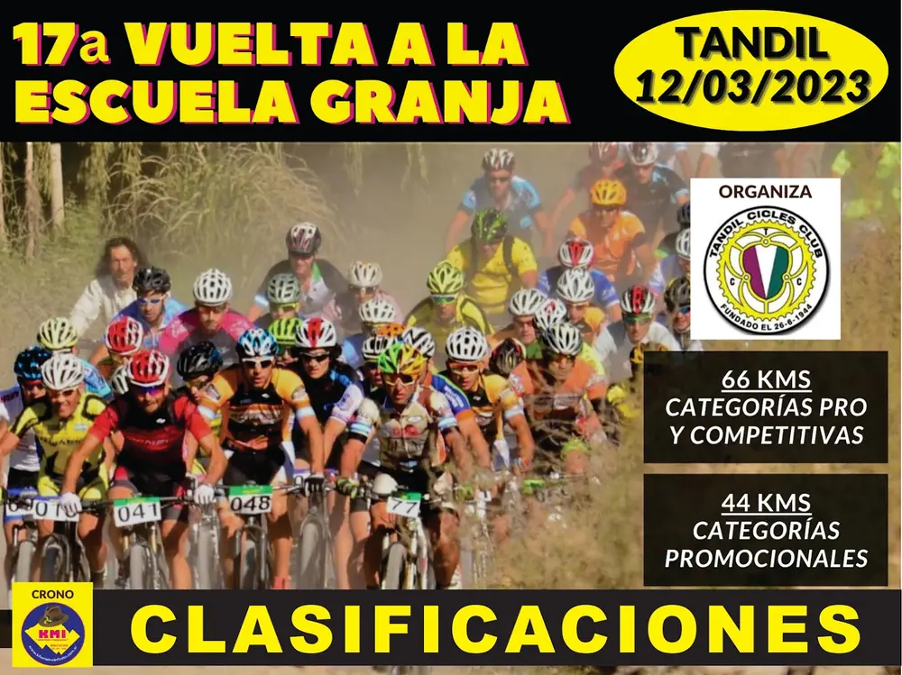
17ª Vuelta a la Escuela Granja
12 de marzo de 2023 · Tandil · 172 en la clasificación
Primero en la general: Martinez Claudio, 1:53:09
5ta. Vuelta MTB Rural Batán
5 de marzo de 2023 · Batán · 465 en la clasificación
Primero en la general: Izarriaga Sebastian, 2:10:54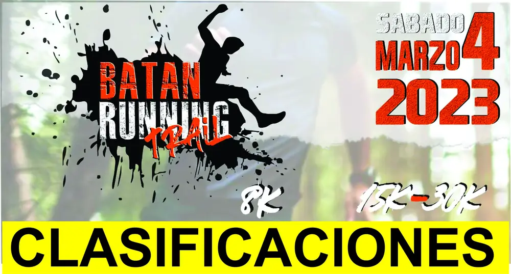
Batán Running Trail
4 de marzo de 2023 · Batán · 145 en la clasificación
Primero en la general: Cavadore Quimey, 2:57:48
Rally BTT
26 de febrero de 2023 · Tandil · 433 en la clasificación
Primero en la general: Aiello Maximiliano, 1:54:58
7º Rural Bike Rauch
12 de febrero de 2023 · Rauch · 114 en la clasificación
Primero en la general: Arancedo Joaquin / Jauregui Jose, 1:21:07

6º Rural Bike del Club Ciclista Rauch
17 de diciembre de 2022 · Rauch · 93 en la clasificación
Primero en la general: Celiberti Martin, 1:38:341º Duatlón Rural el Sendero del Leon
11 de diciembre de 2022 · Balcarce · 77 en la clasificación
Primero en la general: Lescano Abdias, 2:24:44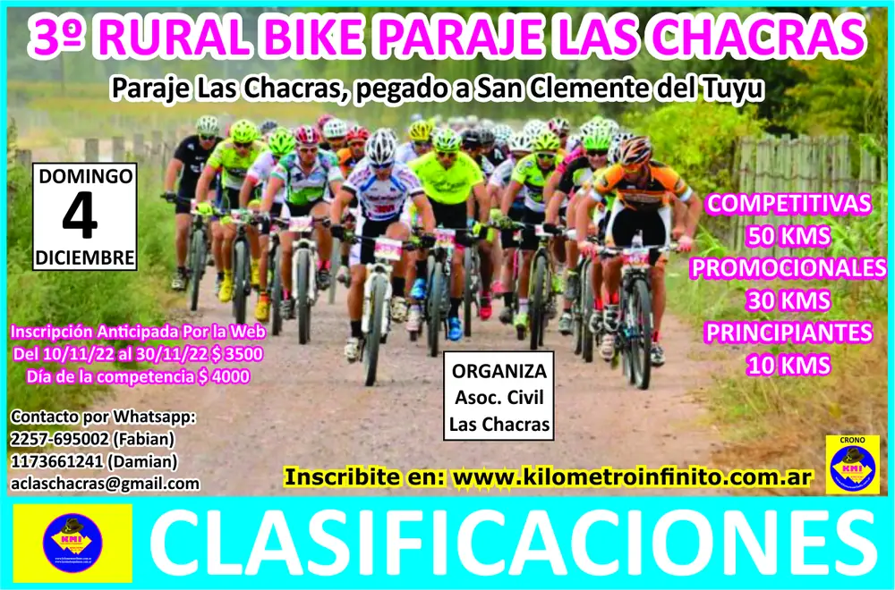
3º Rural Bike las Chacras
4 de diciembre de 2022 · 51 en la clasificación
Primero en la general: Dagostino Andres, 1:52:35
2º Rural Bike Mechongué
27 de noviembre de 2022 · Mechongué · 205 en la clasificación
Primero en la general: Ramos Sergio, 1:34:40
Campeonato Argentino de Rally Endurance
20 de noviembre de 2022 · Balcarce · 190 en la clasificación
Primero en la general: Aiello Maximiliano, 3:03:57
La Revancha de las Tres Cruces
6 de noviembre de 2022 · Ayacucho · 115 en la clasificación
Primero en la general: Giuliano Cristian / Aiello Maximiliano, 1:36:07
1º Rally Cross Miramar
30 de octubre de 2022 · Miramar · 191 en la clasificación
Primero en la general: Romero Juan Pablo, 1:48:30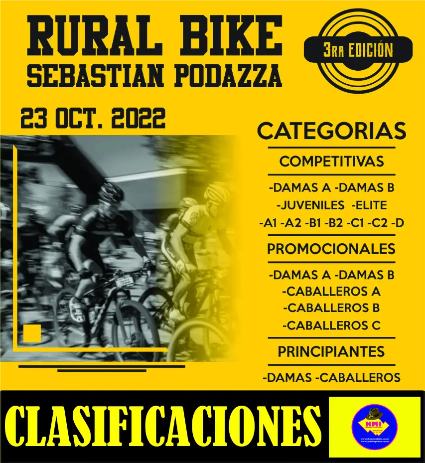
3º Rural Bike Sebastián Podazza
23 de octubre de 2022 · General Lavalle · 75 en la clasificación
Primero en la general: Borjes Gustavo, 1:21:08
1º Maratón del Golf
9 de octubre de 2022 · Dolores · 117 en la clasificación
Primero en la general: Redolatti J. Ignacio, 0:30:55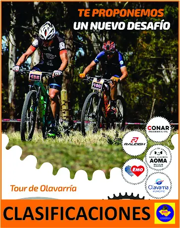
3º Tour de Olavarría
2 de octubre de 2022 · Olavarría · 284 en la clasificación
Primero en la general: Messineo Leandro, 2:10:12
Pinamar Bike Race, 1ª Edicion
25 de septiembre de 2022 · Pinamar · 198 en la clasificación
Primero en la general: Arancedo Joaquin, 1:42:09
2ª Vuelta de los Bosques, Ed. Balcarce
18 de septiembre de 2022 · Balcarce · 204 en la clasificación
Primero en la general: Aiello Maximiliano / Fritz Eduardo, 1:43:14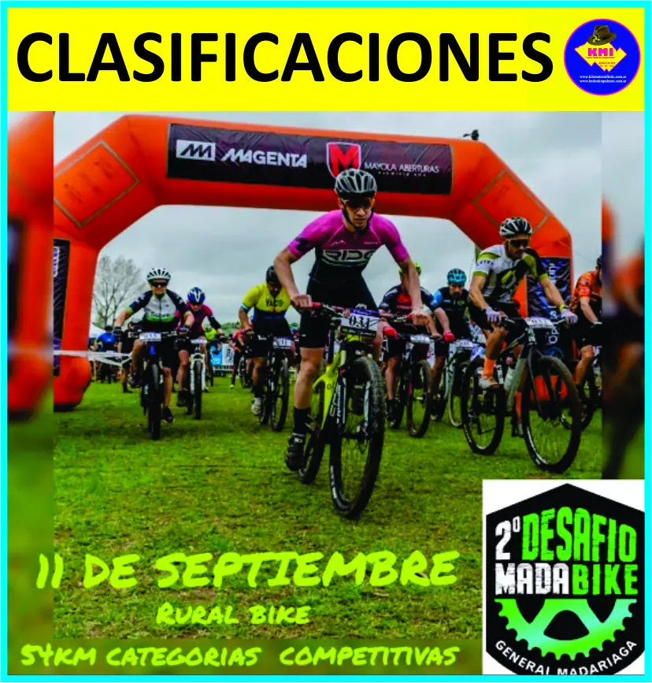
2º Desafío Madabike
11 de septiembre de 2022 · 242 en la clasificación
Primero en la general: Arancedo Joaquin, 1:38:23
11º Desafío de las Tres Cruces
28 de agosto de 2022 · Ayacucho · 224 en la clasificación
Primero en la general: Romero Juan Pablo, 1:24:25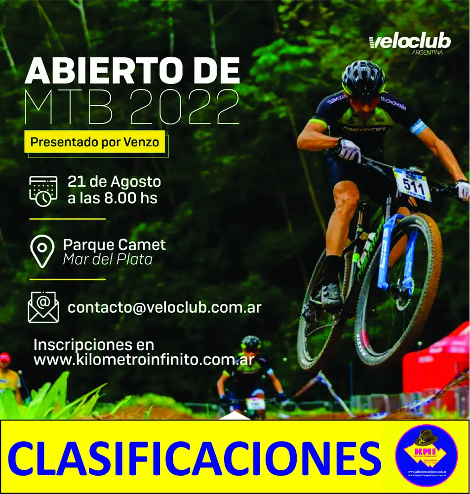
Abierto de MTB 2022
21 de agosto de 2022 · Mar del Plata · 125 en la clasificación
Primero en la general: Zarza Nicolas, 1:10:12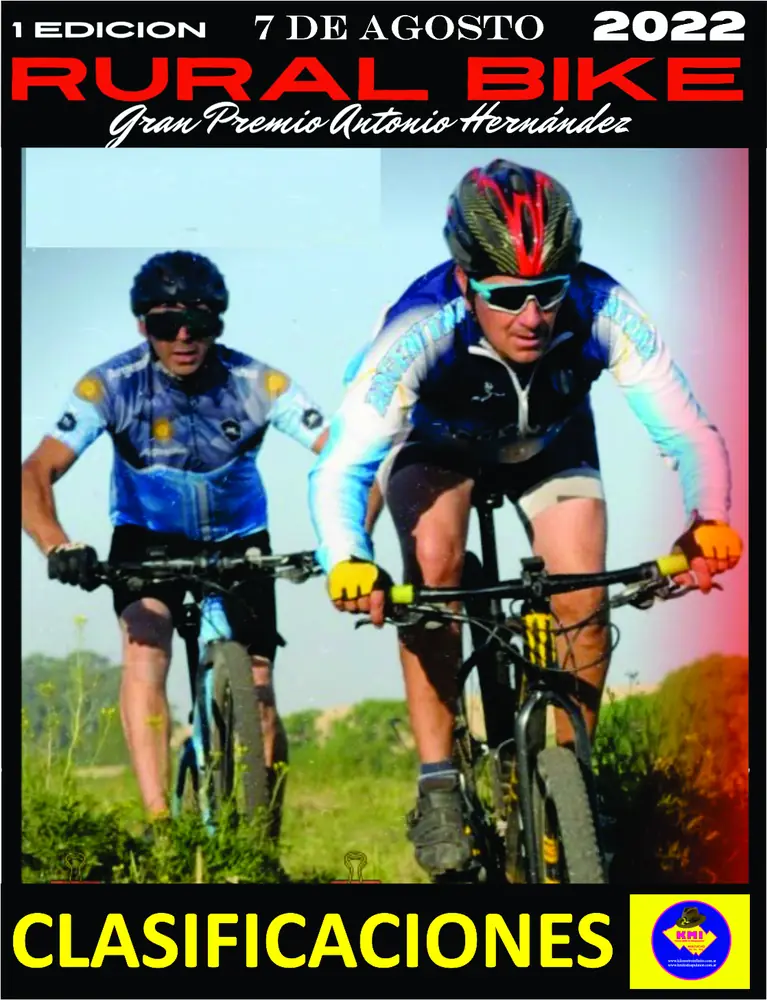
1º Rural Bike Otamendi Homenaje a Antonio Hernandez
7 de agosto de 2022 · 210 en la clasificación
Primero en la general: Giuliano Cristian, 1:29:44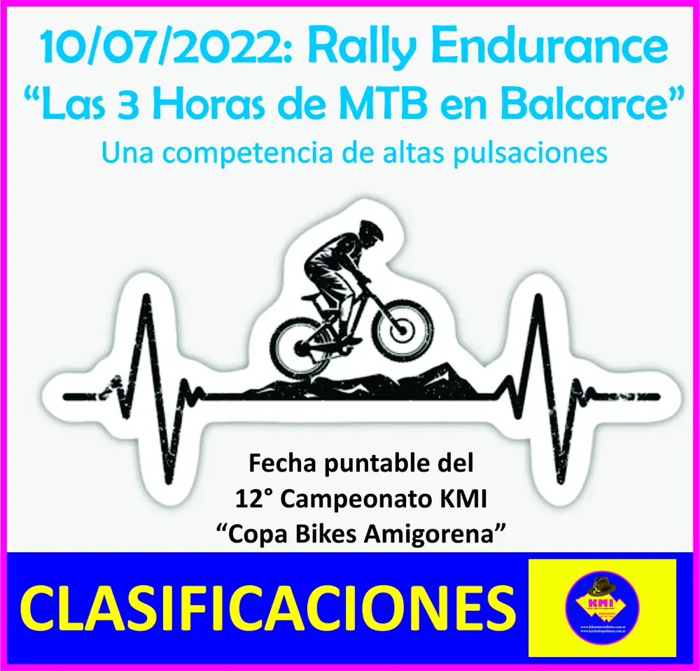
3º Rally Endurance las 3hs de MTB Balcarce
10 de julio de 2022 · Balcarce · 268 en la clasificación
Primero en la general: Sivori Ariel A., 3:19:01
1º Duatlón Rural Laguna Mar Chiquita
3 de julio de 2022 · Mar Chiquita · 77 en la clasificación
Primero en la general: Cepeda Ramiro, 1:07:57
13ª Vuelta de los Bosques
26 de junio de 2022 · Gardey · 437 en la clasificación
Primero en la general: Martinez Claudio / Tolosa Sebastian, 1:39:55
5º Rural Bike Solidario del Rotary Club Villa Gesell
12 de junio de 2022 · Villa Gesell · 107 en la clasificación
Primero en la general: Ortellado German, 1:51:23
Duatlón Rural
5 de junio de 2022 · 108 en la clasificación
Primero en la general: Guerrero Joaquin, 1:35:59
6ta. Vuelta de Gardey
22 de mayo de 2022 · Gardey · 145 en la clasificación
Primero en la general: Aiello Maximiliano / Caprifoglio Martin, 1:18:13
6to. Rally Bike Costa del Este Copa Dario Salomen
15 de mayo de 2022 · Costa del Este · 163 en la clasificación
Primero en la general: Caraciolli Luciano, 01:36:24
1º Duatlón Rural Ciudad de Maipú
8 de mayo de 2022 · Maipú · 106 en la clasificación
Primero en la general: Lopez Ivan, 01:12:53
6ta. Vuelta a Coronel Vidal
1 de mayo de 2022 · Coronel Vidal · 239 en la clasificación
Primero en la general: Giuliano Cristian, 01:40:25
Vuelta al Centinela Sur
10 de abril de 2022 · Azucena · 320 en la clasificación
Primero en la general: Aiello Maximiliano, 02:15:27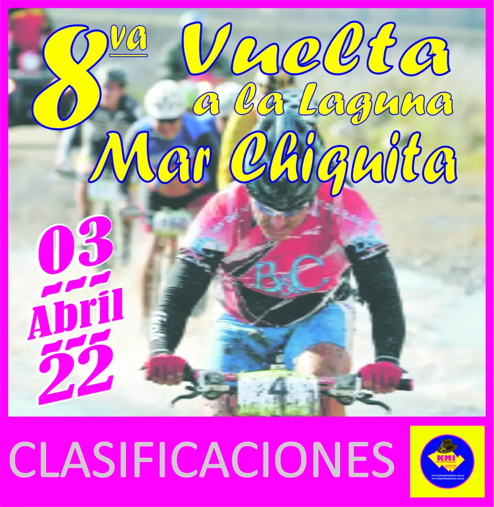
8va. Vuelta a la Laguna Mar Chiquita
3 de abril de 2022 · Mar Chiquita · 281 en la clasificación
Primero en la general: Salazar Gregorio, 01:17:28
12° Campeonato Regional de MTB Rural KMI Copa Bikes Amigorena
3 de abril de 2022 · 132 en la clasificación
Primero en la general: Otiniano Gaston, 145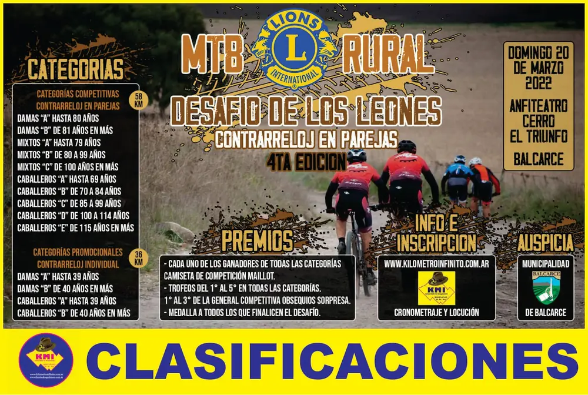
4to. Desafío de los Leones
20 de marzo de 2022 · Balcarce · 235 en la clasificación
Primero en la general: Aiello Maximiliano / Romero J. Pablo, 01:38:49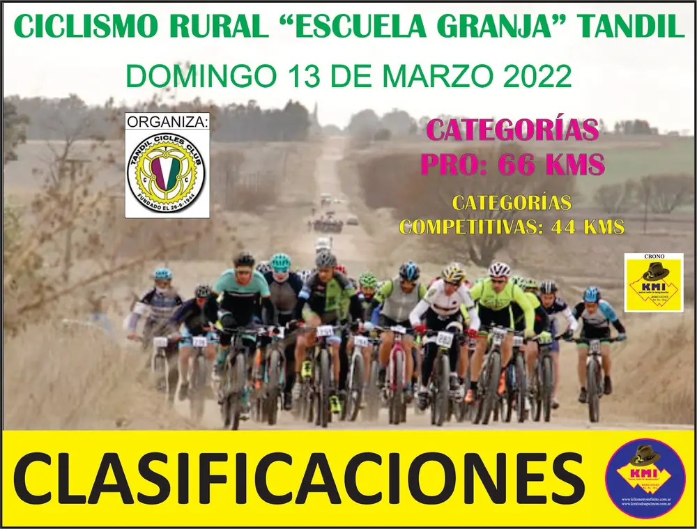
16ª Vuelta a la Escuela Granja
13 de marzo de 2022 · Tandil · 274 en la clasificación
Primero en la general: Martinez Claudio, 01:48:22
4ª Vuelta MTB Rural a Batán
27 de febrero de 2022 · Batán · 313 en la clasificación
Primero en la general: Raineri Enrique, 02:08:43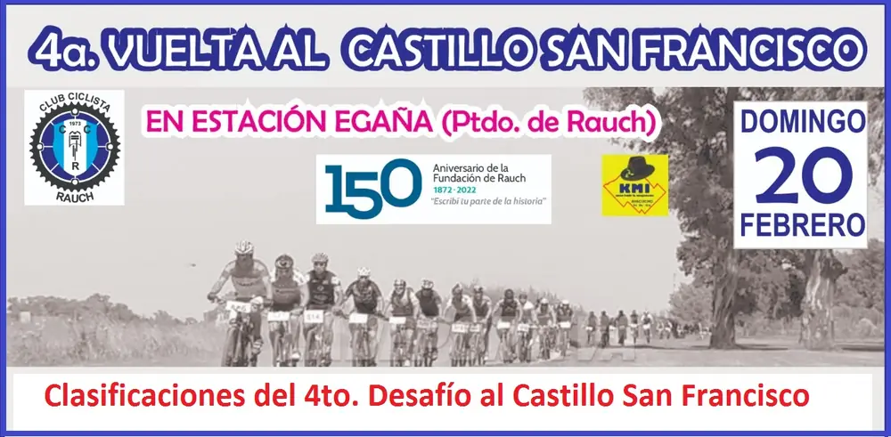
4º Desafío al Castillo San Francisco
20 de febrero de 2022 · Rauch · 164 en la clasificación
Primero en la general: Romero Juan Pablo, 01:32:55Rally Nocturno Sombras Nadas Mas
12 de febrero de 2022 · Balcarce · 91 en la clasificación
Primero en la general: Aiello Maximiliano / Romero J. Pablo, 01:31:36
Rural Bike Despidiendo el Año
19 de diciembre de 2021 · Gardey · 204 en la clasificación
Primero en la general: Giuliano Cristian / Trabella Dario, 01:28:28Rally Cross Tandil BTT
12 de diciembre de 2021 · Tandil · 241 en la clasificación
Primero en la general: Sivori Ariel A., 01:53:551º Rural Bike del Club Unión Maipú
8 de diciembre de 2021 · Maipú · 151 en la clasificación
Primero en la general: Raineri Enrique, 01:42:00Clasifiación del 1º Rural Bike Mechongué
28 de noviembre de 2021 · Mechongué · 128 en la clasificación
Primero en la general: Dipierro Jonatan, 01:23:183º Desafío al Castillo San Francisco
7 de noviembre de 2021 · 151 en la clasificación
Primero en la general: Giuliano Cristian, 01:32:507ma. Vuelta a la Laguna Mar Chiquita
31 de octubre de 2021 · Mar Chiquita · 290 en la clasificación
Primero en la general: Dipierro Jonatan, 01:11:22Comentarios de la 16ª Vuelta de los Bosques, Edición Balcarce
24 de octubre de 2021 · Balcarce · 372 en la clasificación
Primero en la general: Trotta Gonzalo / Sivori Ariel, 01:29:102º Rally Endurance 3hs de MTB Balcarce
3 de octubre de 2021 · Balcarce · 298 en la clasificación
Primero en la general: Aiello Maximiliano, 03:03:261º Desafío Madabike
19 de septiembre de 2021 · 203 en la clasificación
Primero en la general: Aiello Maximiliano / Martinez Claudio, 01:29:183º Vuelta MTB Rural Batán Bike
5 de septiembre de 2021 · Batán · 668 en la clasificación
Primero en la general: Dipierro Jonatan, 02:16:4810º Desafío de las Tres Cruces
22 de agosto de 2021 · Ayacucho · 263 en la clasificación
Primero en la general: Arancedo Joaquin / Jauregui Jose, 01:10:28Y del Rural Bike Vuelta al Castillo San Francisco
21 de febrero de 2021 · Rauch · 196 en la clasificación
Primero en la general: Martinez Ariel, 01:30:563º Desafío Costa Brava
21 de enero de 2021 · Quequén · 157 en la clasificación
Primero en la general: Correa Mauro E., 01:44:51
Comnetario del 4to. Rally Bike del Automoto Club Lezama
8 de marzo de 2020 · Lezama · 67 en la clasificación
2ª Vuelta de MTB Rural Batán Bike
1 de marzo de 2020 · Batán · 206 en la clasificación
Primero en la general: Antognoli Carlos E., 02:49:071º Gran Premio Federico Rauch
23 de febrero de 2020 · Rauch · 147 en la clasificación
Primero en la general: Navas Diego, 01:10:06
Rural Bike Ojos de Gato
15 de diciembre de 2019 · Tandil · 45 en la clasificación
Primero en la general: Infinito Bikes, 02:12:252do. Duatlón Costayres
8 de diciembre de 2019 · Costa del Este · 129 en la clasificación
Primero en la general: BORJES, Gustavo, 01:26:011º Tour en las Canteras de San Manuel
1 de diciembre de 2019 · 104 en la clasificación
Primero en la general: Giuliano Cristian, 01:42:083er. Rural Bike del Automoto Club Lezama
24 de noviembre de 2019 · Lezama · 91 en la clasificación
Primero en la general: Irigoyen Juan Jose, 01:24:272do. Rural Bike las Chacras
17 de noviembre de 2019 · 77 en la clasificación
Primero en la general: Menconi Miguel, 01:47:2116º Rally en las Sierras de
3 de noviembre de 2019 · Tandil · 1392 en la clasificación
Primero en la general: Maggiora Matias David, 02:04:512da. Vuelta al Sombrerito
13 de octubre de 2019 · Barker · 84 en la clasificación
Primero en la general: Giuliano Cristian, 01:50:562do. Rural Bike Sebastián Podazza
6 de octubre de 2019 · General Lavalle · 59 en la clasificación
Primero en la general: Bonomi Rafael, 01:38:243er. Desafío de los Leones
29 de septiembre de 2019 · Balcarce · 138 en la clasificación
Primero en la general: Romero Juan Pablo / Fabano Dario, 01:51:40Rally Marathon BTT
22 de septiembre de 2019 · Tandil · 210 en la clasificación
Primero en la general: Caraciolli Luciano, 03:14:43Duatlón Sprint
19 de septiembre de 2019 · Mar del Plata · 75 en la clasificación
Primero en la general: Gomez Nicolas, 00:58:485ta. Vuelta a Coronel Vidal
15 de septiembre de 2019 · Coronel Vidal · 193 en la clasificación
Primero en la general: Aiello Maximiliano, 01:24:139º Desafío de las Tres Cruces
8 de septiembre de 2019 · Ayacucho · 63 en la clasificación
Primero en la general: Gimenez Romina / Lopez Laura, 01:29:551º Rural Bike de la Soga Gaucha
1 de septiembre de 2019 · 106 en la clasificación
Primero en la general: Sosa Jorge A., 01:24:40Dela 12ª Vuelta de los Bosques
30 de junio de 2019 · Tandil · 386 en la clasificación
Primero en la general: Nuñez Daniel / Colombini Juan, 01:36:393º Rural Bike de la Independencia
23 de junio de 2019 · General Lavalle · 124 en la clasificación
Primero en la general: Bonomi Rafael, 01:14:118vo. Desafío de las Tres Cruces
9 de junio de 2019 · Ayacucho · 143 en la clasificación
Primero en la general: Gundel Juan, 01:25:431º Desafío al Vivero Cosme Argerich
2 de junio de 2019 · 95 en la clasificación
Primero en la general: Caraciolli Luciano / Barzan Emanuel, 01:33:0212º Rural Bike Desafío ¿quien Es Quien?
25 de mayo de 2019 · 139 en la clasificación
Primero en la general: Sosa Jorge Adrian, 01:20:185to. Rally Bike Costa del Este
12 de mayo de 2019 · Costa del Este · 332 en la clasificación
Primero en la general: Caraciolli Luciano, 01:18:074to. Rural Bike Solidario del Rotary Club Villa Gesell
28 de abril de 2019 · Villa Gesell · 168 en la clasificación
Primero en la general: Bonomi Rafael, 01:48:222do. Desafío Costa Brava
14 de abril de 2019 · Quequén · 189 en la clasificación
Primero en la general: Martinez Claudio, 01:41:028va. Vuelta al Centinela Sur
7 de abril de 2019 · Azucena · 375 en la clasificación
Primero en la general: Ortiz Matias, 01:59:513er. Rural Bike en la Esc. Nº 14
31 de marzo de 2019 · Dolores · 96 en la clasificación
Primero en la general: Irigoyen Juan Jose, 01:18:386ta. Vuelta a la Laguna Mar Chiquita
24 de marzo de 2019 · Mar Chiquita · 294 en la clasificación
Primero en la general: Fernandez Alejandro, 01:16:351º Gran Premio Batán Bike
10 de marzo de 2019 · Batán · 287 en la clasificación
Primero en la general: Martinez Claudio, 01:59:58
10º Campeonato Regional de MTB Rural del al
10 de marzo de 2019 · 46 en la clasificación
11va. Vuelta al Pueblo de Pila
24 de febrero de 2019 · Pila · 182 en la clasificación
Primero en la general: Di Lorenzo Jose Luis, 01:42:06
Gran Premio Osvaldo Campero
16 de diciembre de 2018 · Rauch · 54 en la clasificación
Primero en la general: Funaro Pablo / Cuevas Ezequiel, 01:16:09Duatlón Costayres
9 de diciembre de 2018 · Costa del Este · 157 en la clasificación
Primero en la general: CARACCIOLI, Luciano, 01:17:4611º Rural Bike del Taller Protegido Loberia
2 de diciembre de 2018 · 91 en la clasificación
Primero en la general: LLanos Gaston, 01:26:022do. Rural Bike Escuela Nº 14
25 de noviembre de 2018 · Dolores · 69 en la clasificación
Primero en la general: Aristu Flavio, 01:15:51Duatlón Sebastián Podazza
28 de octubre de 2018 · General Lavalle · 35 en la clasificación
Primero en la general: Tiseja Juan Franco / Riccobon Ezequiel, 01:13:121º Vuelta al Sombrerito
14 de octubre de 2018 · Barker · 56 en la clasificación
Primero en la general: Scatt-Optitech, 1:28:234to. Rally del Tuyu
7 de octubre de 2018 · 146 en la clasificación
Primero en la general: Bonomi Rafael, 1:24:391º Rural Bike las Chacras
23 de septiembre de 2018 · General Lavalle · 99 en la clasificación
Primero en la general: Di Lorenzo Jose Luis, 1:37:242do. Rally Cross BTT
16 de septiembre de 2018 · Tandil · 110 en la clasificación
Primero en la general: Sivori Ariel / Aiello Maximiliano, 2:10:582º Desafío de los Leones
9 de septiembre de 2018 · Balcarce · 90 en la clasificación
Primero en la general: Fabano Dario / Aiello Maximiliano, 1:43:15Rally Bike Desafío a la Rosita
2 de septiembre de 2018 · Castelli · 119 en la clasificación
Primero en la general: Menconi Miguel, 1:41:031º Vuelta a Don Ramon
19 de agosto de 2018 · Tandil · 189 en la clasificación
Primero en la general: Fabano Dario, 1:50:314ta. Vuelta a Coronel Vidal
12 de agosto de 2018 · Coronel Vidal · 102 en la clasificación
Primero en la general: Scatt-Optitech, 1:42:43Duatlón Crossbtt
5 de agosto de 2018 · Barker · 144 en la clasificación
Primero en la general: Santillan Ariel, 2:01:502do. Rural Bike de la Independencia y del Campeonato de la Costa Atlántica
29 de julio de 2018 · 130 en la clasificación
Primero en la general: Bonomi Rafael, 1:17:27Desafío al Camino Muerto
22 de julio de 2018 · Tandil · 133 en la clasificación
Posiciones del Campeonato Regional de la Costa Atlantica 2018 Tras 5 Fechas
10 de julio de 2018 · 192 en la clasificación
1º Rally del Jagüel
1 de julio de 2018 · 222 en la clasificación
Primero en la general: Caraciolli Luciano, 1:33:0911va. Vuelta de los Bosques
24 de junio de 2018 · Tandil · 326 en la clasificación
Primero en la general: Imaz Javier / Montenegro Fabricio, 1:29:177mo. Desafío de las Tres Cruces
10 de junio de 2018 · Ayacucho · 72 en la clasificación
Primero en la general: Scatt-Optitech, 1:28:28Rural Bike la Vuelta a Bavio
27 de mayo de 2018 · 321 en la clasificación
Primero en la general: Caraciolli Luciano, 1:35:40Campeonato de la Costa 2018
22 de mayo de 2018 · 188 en la clasificación
10mo. Desafío ¿quien Es Quien?
20 de mayo de 2018 · 77 en la clasificación
Primero en la general: Sanchez Walter, 0:59:494to. Rally Bike Costa del Este
6 de mayo de 2018 · Costa del Este · 321 en la clasificación
Primero en la general: Di Lorenzo Jose Luis, 1:31:425ta. Vuelta a la Laguna Mar Chiquita
15 de abril de 2018 · Mar Chiquita · 296 en la clasificación
Primero en la general: Fabano Dario, 1:14:417ma. Vuelta al Centinela Sur
8 de abril de 2018 · Azucena · 300 en la clasificación
Primero en la general: Zato Rene, 2:06:242do Gran Premio Diente Competicion
2 de abril de 2018 · Quequén · 132 en la clasificación
Primero en la general: Martinez Claudio, 1:19:583º Rural Bike Solidario
25 de marzo de 2018 · Villa Gesell · 124 en la clasificación
Primero en la general: Menconi Miguel, 1:54:111º Desafío Costa Brava
18 de marzo de 2018 · Quequén · 181 en la clasificación
Primero en la general: Martinez Claudio, 1:26:55Rural Bike en Parejas de la Escuela Nº
4 de marzo de 2018 · Balcarce · 71 en la clasificación
Primero en la general: Aiello Maximiliano / Fabano Dario, 1:44:4310ma. Vuelta al Pueblo de Pila
25 de febrero de 2018 · Pila · 123 en la clasificación
Primero en la general: Martinez Ariel, 1:24:216to. Rally Bike Ciudad de Rauch
18 de febrero de 2018 · Rauch · 190 en la clasificación
Primero en la general: Trotta Gonzalo, 1:26:55
1º Cross de Aventura Vuelta de Ayacucho
3 de diciembre de 2017 · Ayacucho · 122 en la clasificación
Desafío de los Leones
26 de noviembre de 2017 · Balcarce · 81 en la clasificación
Primero en la general: Aristu Flavio / Menconi Miguel, 1:55:40Rally Bike Ciudad de Dolores
19 de noviembre de 2017 · Dolores · 151 en la clasificación
Primero en la general: Aiello Maximiliano, 1:23:4214º Rally en las Sierras de
5 de noviembre de 2017 · Tandil · 1541 en la clasificación
Primero en la general: Ranquehue Cristian, 01:58:02Y del Rural Bike del Instituto Inmaculada Concepcion
16 de octubre de 2017 · Rauch · 109 en la clasificación
Primero en la general: Giuliano Cristian, 1:34:08Gran Premio Sierra de los Padres
8 de octubre de 2017 · Sierra de los Padres · 281 en la clasificación
Primero en la general: Bonomi Rafael, 1:42:47
Rally Bike del Tuyu
1 de octubre de 2017 · 144 en la clasificación
Primero en la general: Caraciolli Luciano, 1:18:499no. Rural Bike ¿quien Es Quien?
24 de septiembre de 2017 · 138 en la clasificación
Primero en la general: Giuliano Cristian, 1:31:303er. Vuelta a Coronel Vidal
21 de agosto de 2017 · Coronel Vidal · 149 en la clasificación
Primero en la general: Rojo Marcos, 01:34:15Rally Bike Reconocimiento a Gustavo Bibbo
6 de agosto de 2017 · Balcarce · 175 en la clasificación
Primero en la general: Fabano Dario, 1:47:27Rural Bike de la Independencia
23 de julio de 2017 · 107 en la clasificación
Primero en la general: Menconi Miguel, 1:34:1610ma. Vuelta de los Bosques, Especialized
25 de junio de 2017 · Tandil · 299 en la clasificación
Primero en la general: Bonomi Rafael / Rojo Marcos, 1:39:316to. Desafío de las Tres Cruces
4 de junio de 2017 · Ayacucho · 119 en la clasificación
Primero en la general: Giuliano Cristian / Franqui Sergio, 1:25:53Rural Bike 2da.vuelta al Partido de Lezama
28 de mayo de 2017 · Lezama · 146 en la clasificación
Primero en la general: Martinez Ariel, 1:22:53Posiciones del Campenato Regional 6 Ciudades
18 de mayo de 2017 · 103 en la clasificación
Y del 8vo. Rural Bike ¿quien Es Quien?
14 de mayo de 2017 · 149 en la clasificación
Primero en la general: Sosa Jorge Adrian "chavo", 1:22:513er. Rally Bike Costa del Este
7 de mayo de 2017 · Costa del Este · 239 en la clasificación
Primero en la general: Di Lorenzo Jose Luis, 1:28:592do. Rural Bike Solidario del Rotary Club Villa Gesell
23 de abril de 2017 · Villa Gesell · 100 en la clasificación
Primero en la general: Giuliano Cristian, 1:15:046ª Vuelta al Centinela Sur, Raleigh
9 de abril de 2017 · Azucena · 270 en la clasificación
Primero en la general: Martinez Claudio, 1:29:18Rural Bike Aniversario de Gral. Guido
26 de marzo de 2017 · 88 en la clasificación
Primero en la general: Martinez Ariel, 1:43:52Rally Bike Laguna la Rosita
12 de marzo de 2017 · Castelli · 95 en la clasificación
Primero en la general: Irigoyen Juan Jose (3ro. Gral), 1:40:419na. Vuelta al Pueblo de Pila
5 de marzo de 2017 · Pila · 103 en la clasificación
Primero en la general: Giuliano Cristian, 1:26:03Y del Rural Bike de la Escuela 14 en Dolores
19 de febrero de 2017 · Dolores · 88 en la clasificación
Primero en la general: Mazzotti Damian, 1:16:59
2da. Vuelta a Coronel Vidal y del 10º Aniversario de Kilometro Infinito
4 de diciembre de 2016 · Coronel Vidal · 127 en la clasificación
Primero en la general: Giuliano Cristian, 1:40:24Rural Bike del Taller Protegido en Loberia
23 de octubre de 2016 · 167 en la clasificación
Primero en la general: Sosa Jorge "chavo", 1:19:524to. Desafío de la Web
25 de septiembre de 2016 · Balcarce · 132 en la clasificación
Primero en la general: Giuliano Cristian / Raineri Enrique, 1:42:37Gran Rural Bike Ciudad de Dolores
18 de septiembre de 2016 · Dolores · 135 en la clasificación
Primero en la general: Raineri Enrique, 1:32:475to. Rally Bike Desafío de las Tres Cruces
11 de septiembre de 2016 · Ayacucho · 113 en la clasificación
Primero en la general: Aiello Maximiliano (2º Gral), 1:19:09Rural Bike de la Escuela Nº 31 de Quequén
28 de agosto de 2016 · Quequén · 119 en la clasificación
Primero en la general: Franqui Sergio, 1:29:491º Rally Rural de MTB en Est. Gorchs
14 de agosto de 2016 · 182 en la clasificación
Primero en la general: Martinez Ariel, 1:40:57Y del Rally Bike 10º Aniversario de Kilometro Infinito
9 de julio de 2016 · 148 en la clasificación
Primero en la general: Martinez Ariel, 1:21:11Rural Bike Ciudad de Lezama
12 de junio de 2016 · Lezama · 79 en la clasificación
Primero en la general: Giuliano Cristian, 1:43:102do. Rally Bike en Costa del Este
8 de mayo de 2016 · Costa del Este · 243 en la clasificación
Primero en la general: Bonomi Rafael, 1:19:24Clasficacion del Rural Bike Solidario del Rotary Club Villa Gesell
24 de abril de 2016 · Villa Gesell · 118 en la clasificación
Primero en la general: Albelo Jorge, 1:33:17Y Comentarios del 2do. Rural Bike Bomberos Voluntarios de Villanueva
10 de abril de 2016 · 85 en la clasificación
Primero en la general: Martinez Ariel "locomotora", 1:27:566to. Rural Bike Quien Es Quien
3 de abril de 2016 · 148 en la clasificación
Primero en la general: Franqui Sergio, 1:24:41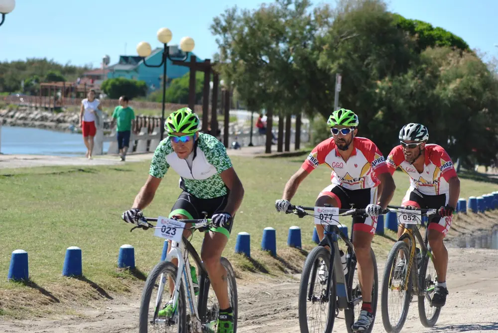
Rural Bike 4ta. Vuelta a la Laguna de Mar Chiquita
20 de marzo de 2016 · Mar Chiquita · 181 en la clasificación
Primero en la general: Fabano Dario, 1:08:42Y de la 8va. Vuelta al Pueblo de Pila
13 de marzo de 2016 · Pila · 112 en la clasificación
Primero en la general: Savoia Raul Agustin, 1:23:404to Gran Premio Nacional Pasion Bike
28 de febrero de 2016 · 340 en la clasificación
Primero en la general: Fabano Dario, 1:46:395to. Rural Bike Ciudad de Rauch
21 de febrero de 2016 · Rauch · 156 en la clasificación
Primero en la general: Trotta Gonzalo, 1:16:46
Las Tercetas de Rural Bike en Balcarce
20 de diciembre de 2015 · Balcarce · 29 en la clasificación
Primero en la general: Fabano Dario, 1:52:13Y de la 1ª Vuelta a Coronel Vidal
6 de diciembre de 2015 · Coronel Vidal · 94 en la clasificación
Primero en la general: Trotta Gonzalo / Fabano Dario, 1:15:47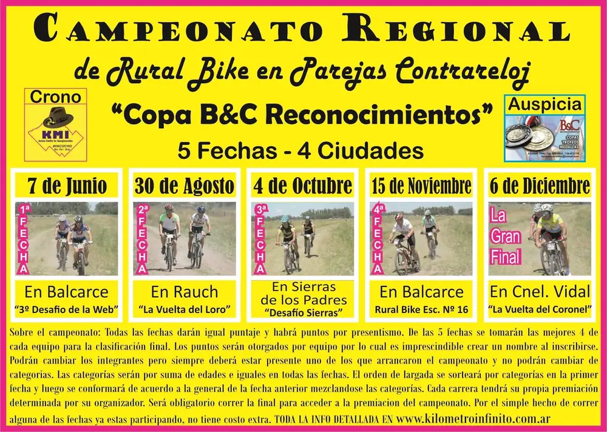
Campeonato Regional de Parejas Contrarreloj Copa B&c Reconocimientos
16 de noviembre de 2015 · 30 en la clasificación
4to. Rally Bike de la Amistad
8 de noviembre de 2015 · Maipú · 138 en la clasificación
Primero en la general: Di Lorenzo Jose Luis, 1:39:05Reto a las 2 Etapas
11 de octubre de 2015 · Balcarce · 146 en la clasificación
Primero en la general: San Martin Emilio, 1:17:33Rural Bike en Loberia
20 de septiembre de 2015 · 147 en la clasificación
Primero en la general: Trotta Gonzalo, 1:18:404to. Desafío de las Tres Cruces
13 de septiembre de 2015 · Ayacucho · 103 en la clasificación
Primero en la general: Di Gregorio Leandro, 1:16:27Rural Bike Vuelta del Loro
31 de agosto de 2015 · Rauch · 54 en la clasificación
Primero en la general: Trotta Gonzalo / Abdeljalec Diego, 1:34:25Desafío de las 7 Lomas
12 de julio de 2015 · Sierra de los Padres · 169 en la clasificación
Primero en la general: Aiello Maximiliano, 01:02:11Y del Rallt MTB Villanueva
14 de junio de 2015 · 142 en la clasificación
Primero en la general: Fritz Eduardo, 02:03:113er. Desafío de la Web
7 de junio de 2015 · Balcarce · 151 en la clasificación
Primero en la general: Fabano Dario / San Martin Emilio, 01:48:524to Desafío las Grutas
4 de abril de 2015 · 71 en la clasificación
Primero en la general: Menconi Miguel, 01:47:213er. Vuelta a la Laguna de Mar Chiquita
29 de marzo de 2015 · Mar Chiquita · 234 en la clasificación
Primero en la general: Parodi Geronimo, 01:45:557ma. Vuelta al Pueblo de Pila
1 de marzo de 2015 · Pila · 143 en la clasificación
Primero en la general: Martinez Ariel, 01:30:19Rural Bike Doble San Agustin en Balcarce
22 de febrero de 2015 · Balcarce · 174 en la clasificación
Primero en la general: Palma Fausto, 02:12:59
Y del Rural Bike en Arenas Verdes y Puntuación del 5to Campeonato KMI
14 de diciembre de 2014 · 91 en la clasificación
Primero en la general: Giuliano Cristian, 01:21:58Desafiando a las Canteras
7 de diciembre de 2014 · 154 en la clasificación
Primero en la general: Curuchet Juan Ignacio, 01:44:46Rally Bike de la Amistad en Maipú
23 de noviembre de 2014 · Maipú · 108 en la clasificación
Primero en la general: Irigoyen Juan Jose, 01:48:21Rally Bike Lagunua la Rosita
12 de octubre de 2014 · Castelli · 139 en la clasificación
Primero en la general: Irigoyen Juan Jose, 01:33:27Desafío de las Tres Cruces
14 de septiembre de 2014 · Ayacucho · 128 en la clasificación
Primero en la general: Recalde Ivan, 01:39:03Desafío a la Tortuga
10 de agosto de 2014 · Sierra de los Padres · 191 en la clasificación
Primero en la general: Silva Erik, 02:11:282do. Gran Premio Ciudad de las Flores
3 de agosto de 2014 · Las Flores · 197 en la clasificación
Primero en la general: Conte Tomas, 01:49:00Rompe el Hielo
8 de junio de 2014 · Tandil · 76 en la clasificación
Primero en la general: Ayala Joaquin, 01:29:04Desafío de la Web 2014
1 de junio de 2014 · 147 en la clasificación
Primero en la general: Lo Fiego Gabriela / Zabala Natalia, 02:34:46Rural Bike en Loberia
25 de mayo de 2014 · 104 en la clasificación
Primero en la general: Sosa Jorge Adrian "chavo", 01:31:34Desafío Avanza
27 de abril de 2014 · Miramar · 150 en la clasificación
Primero en la general: Bardazzi Adriana, 00:32:23
3° Campeonato Zonal de Ciclismo Rural KMI
25 de abril de 2012 · 47 en la clasificación
Primero en la general: Espinosa Walter A., 01:01:59
Los que más corrieron
Contando las clasificaciones publicadas en esta web. Si dos personas se llaman igual, acá cuentan como una; y si te anotaste de dos formas distintas, como dos.
- Torres Alberto142 carreras
- Giuliano Cristian138 carreras
- Menconi Miguel127 carreras
- Correa Francisco118 carreras
- Pica Gustavo118 carreras
- Riccillo Carlos108 carreras
- Borjes Gustavo103 carreras
- Bonomi Rafael100 carreras
- Faglioni Raul95 carreras
- Machado Ernesto93 carreras
- Sandoval Isaias92 carreras
- Docarmo Pablo90 carreras
- Cardenas Walter88 carreras
- Silguero Pablo86 carreras
- Araujo Rodrigo85 carreras
- Salm Alejandro82 carreras
- Andrade Ramon78 carreras
- Mascieri Roberto77 carreras
- Llanos Gaston76 carreras
- Aristu Flavio71 carreras